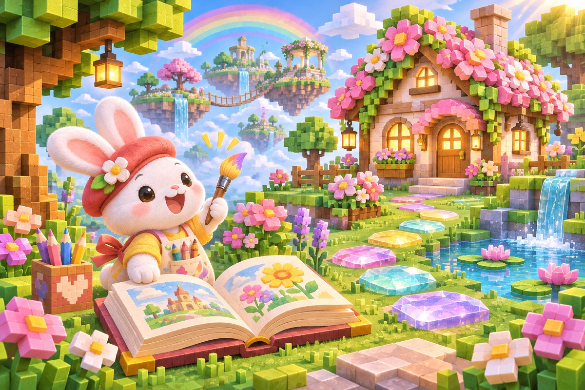

A LITTLE PRACTICE. A WORLD TO GROW.
Small steps.
Big little worlds.
Meet a letter. Make a mark. Grow something lovely.

Your next adventure starts with one little letter.
CHOOSE A LITTLE PATH
What shall we explore?
Start with three letters. Repeat any adventure whenever you like.
MADE WITH BRAVE LITTLE TRIES
Your growing garden
Finish an adventure to collect a decoration. Your treasures always stay.
Choose a treasure, then tap a square to plant it. Tap a planted square to remove it.
A PLACE FOR YOUR IDEAS
Draw your own world
Draw a letter, a flower, or anything you imagine. The studio is always open.
Save your picture before leaving. Keyboard: arrows move, Space toggles drawing.
Progress stays in this browser. No account needed.